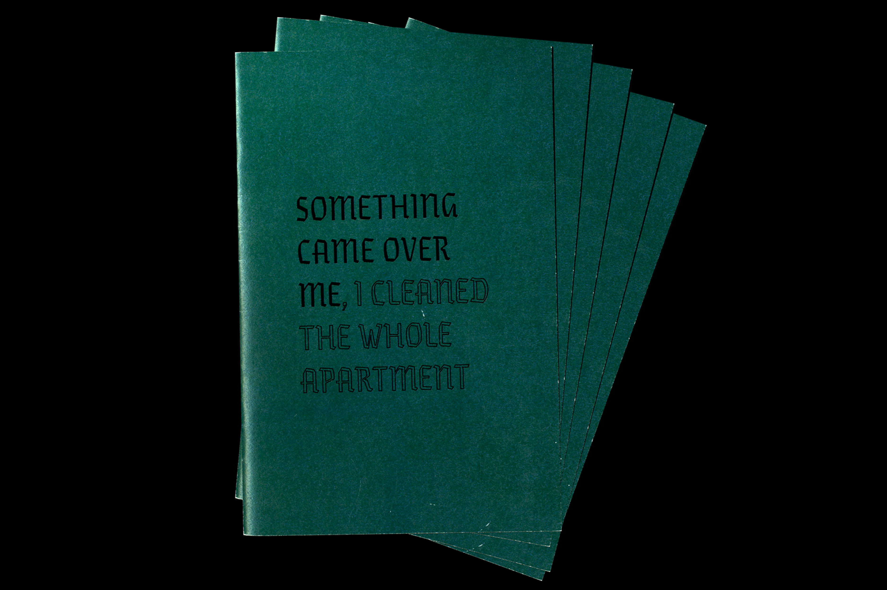
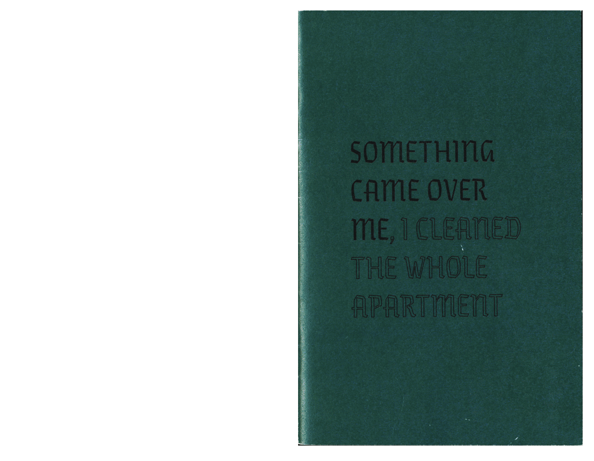
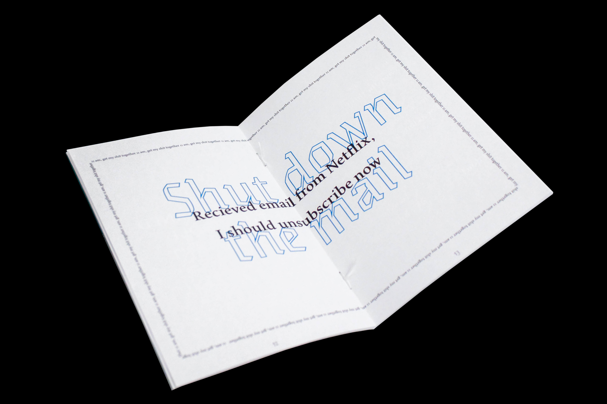

A self-reflecting publication dealing with everyday life procrastination. The layout flirts with typography from rule free fanzines and is bound with dental floss. A fits-in-your-small-bag sized book for last minute reading.
Edition of 6, 135x205 mm, insert 24p 4+4, cover 4p 2+2, bound with floss



